Est. 1905 · Stamford Bridge · London
Five decades of heartbreak, triumph, and glory. From the King's Road to the top of Europe — this is the story of The Blues.
The Journey
From a single founding meeting at the Rising Sun pub to the summit of world football.
Chelsea Football Club is founded by Gus Mears at Stamford Bridge. The club joins the Football League in its very first season.
Under Ted Drake, Chelsea win their first and only league title for 50 years — the 1954–55 First Division Championship.
Ruud Gullit assembles a cosmopolitan squad and delivers the FA Cup, ending a 26-year trophy drought.
Roman Abramovich buys the club in 2003. José Mourinho arrives. The "Special One" era begins, ushering in back-to-back Premier League titles.
Drogba's 88th-minute header, penalties in Munich — Chelsea win the Champions League for the first time. A night that will never be forgotten.
Thomas Tuchel's Chelsea defeat Manchester City in Porto to win Chelsea's second Champions League title. Kai Havertz scores the only goal.
The Blues
Scroll through some of Chelsea's most iconic and current players.
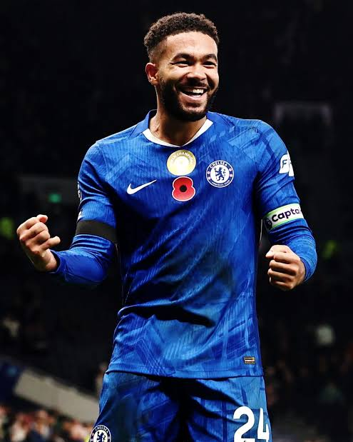
DEF 24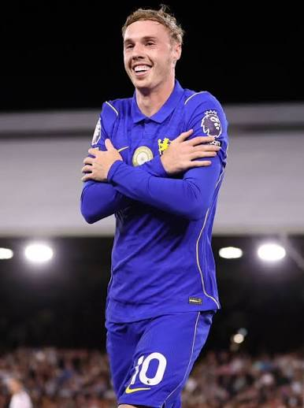
MID 20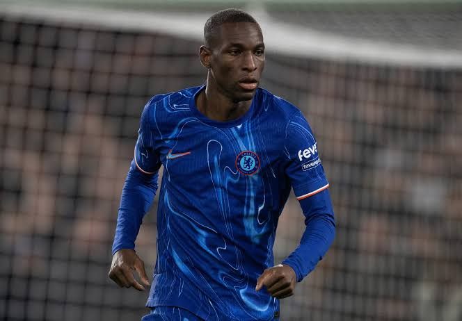
FWD 15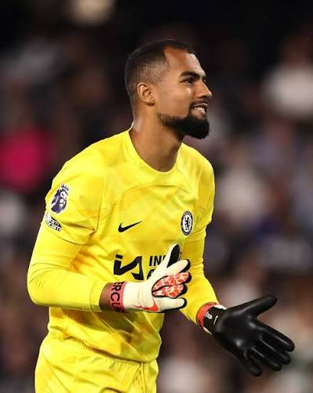
GK 1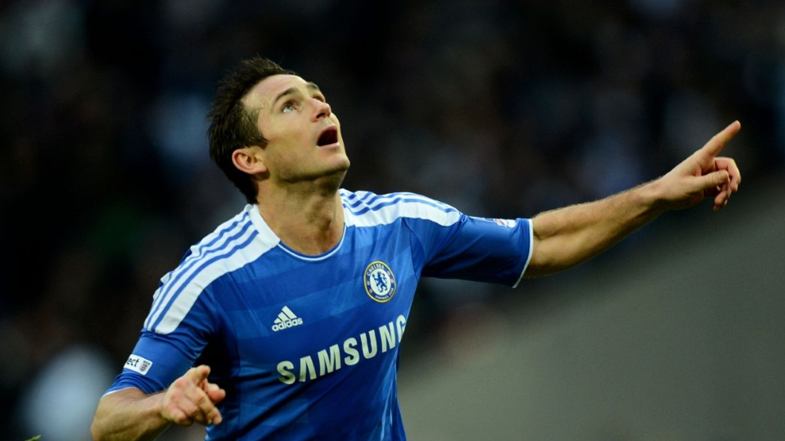
LEGEND 8By the Numbers
A breakdown of Chelsea's performance and legacy in hard numbers.
Sealed in History
One player above all others defined Chelsea's greatest era. Are you ready to reveal them?
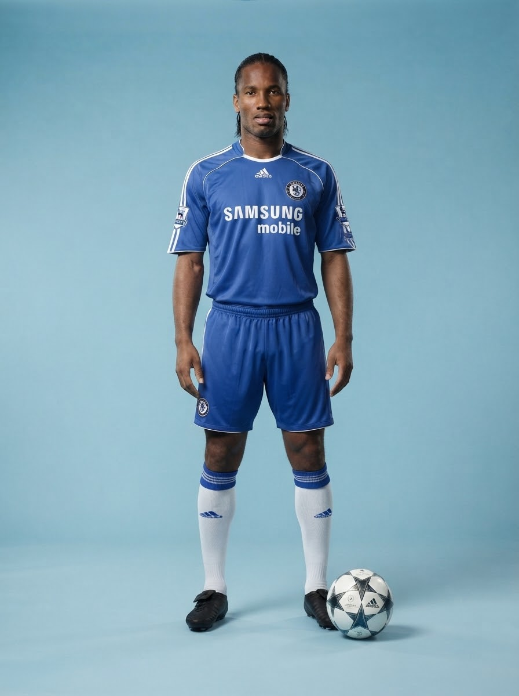
Didier Yves Drogba Tébily
Born in Abidjan, Ivory Coast, Drogba is widely regarded as the greatest player in Chelsea's history. A physical force, a big-game player, and a man who saved his best for the moments that mattered most. His last-minute header in the 2012 Champions League final in Munich remains one of football's most iconic moments.
"I always said that if I had to choose one player to score a goal with my life depending on it, I would choose Didier Drogba." — José Mourinho, Chelsea Manager
The Gallery
Click any image to view it full screen. Add your own photos by following the image manifest.
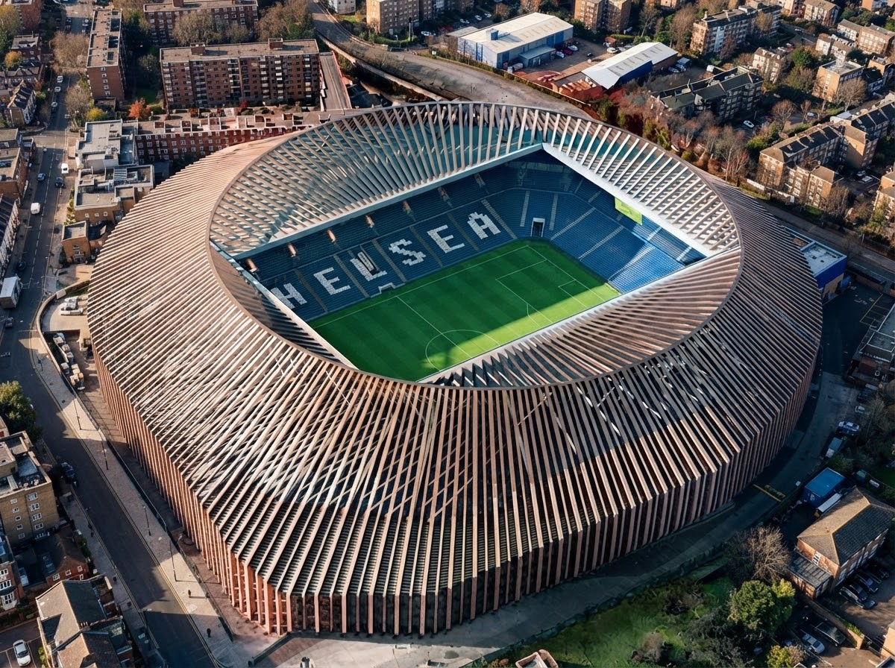
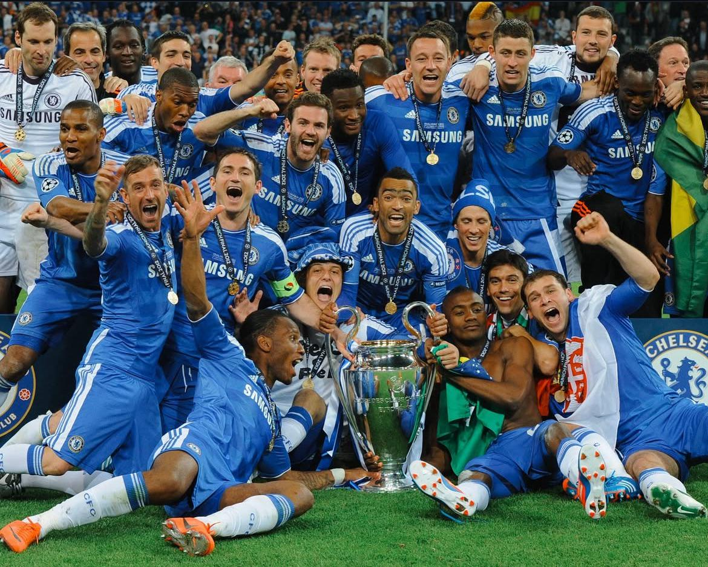
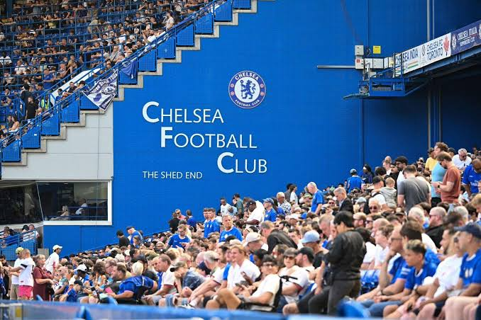
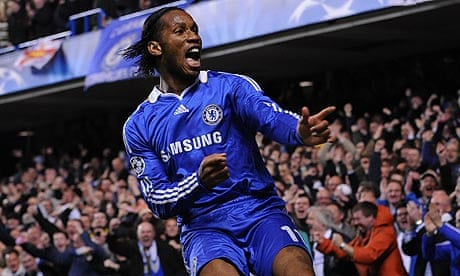
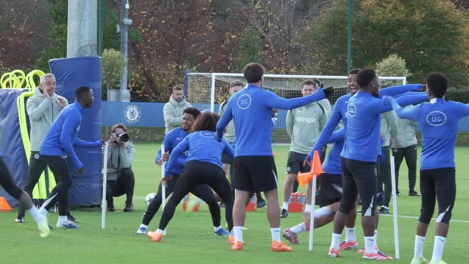
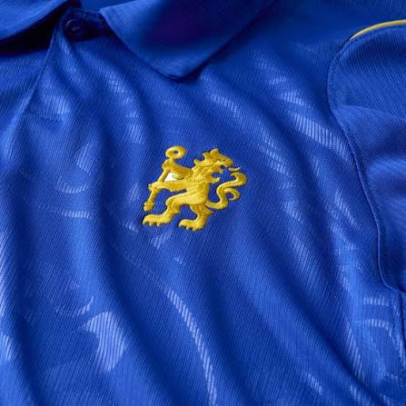
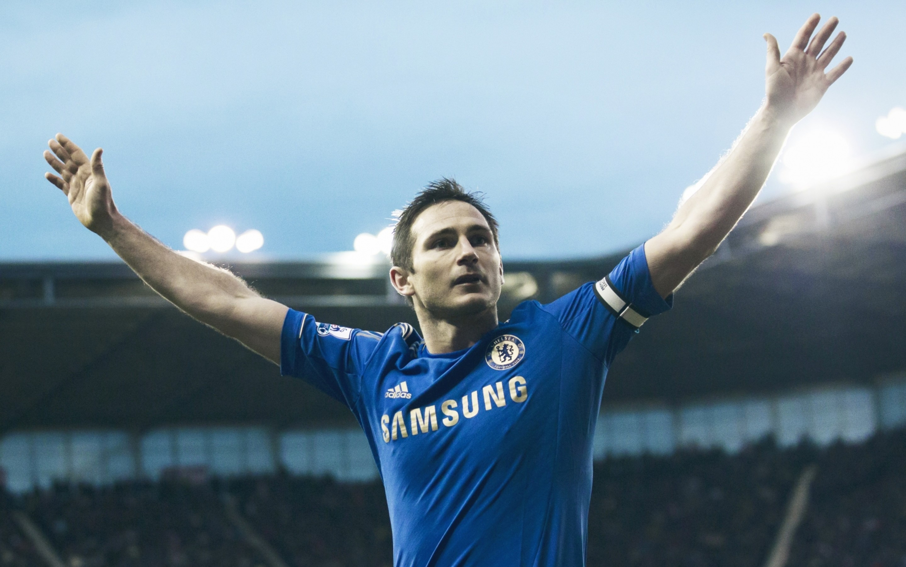
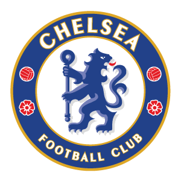
Test Yourself
8 questions. Can you prove you're a true Blue?